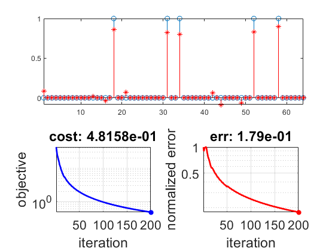

Contents
prepare workspace
clear; close all; home;
load the variables of the optimization problem
load('dataset.mat');
[m, n] = size(A);
set up the function and its gradient (* edit this *)
evaluateFunc = @(x) (1/2)*norm(A*x-b)^2;
evaluateGrad = @(x) A'*A*x - A'*b;
proj_f = @(x) (x <= 0).*0 + ((0<x)&&(x<1)).*x + (x > 1).*max(x/x,0) ;
parameters of the gradient method
xInit = zeros(n, 1);
stepSize = 1/(norm(A,2).^2);
tol = 1e-4;
maxIter = 200;
tau = 5;
optimize
x = xInit;
objVals = zeros(maxIter, 1);
infErrs = zeros(maxIter, 1);
for iter = 1:maxIter
grad = evaluateGrad(x);
[M, I] = max(abs(grad));
e = eye(length(grad));
s = -tau*sign(grad(I))*e(:,I);
stepSize = proj_f( ((s-x)'*A'*(b-A*x))/norm(A*(s-x)).^2 );
xNext = (1-stepSize)*x + stepSize*s;
funcNext = evaluateFunc(xNext);
objVals(iter) = funcNext;
infErrs(iter) = norm(x(:)-xtrue(:))/norm(xtrue(:));
fprintf('[%d/%d] [step: %.1e] [objective: %.1e]\n',...
iter, maxIter, stepSize, objVals(iter));
figure(1);
set(gcf, 'Color', 'w');
subplot(2, 2, 1:2);
stem(1:n, xtrue);
hold on;
stem(1:n, x, 'r*');
hold off;
xlim([1, n])
subplot(2, 2, 3);
semilogy(1:iter, objVals(1:iter), 'b-',...
iter, objVals(iter), 'b*', 'LineWidth', 2);
grid on;
axis tight;
xlabel('iteration');
ylabel('objective');
title(sprintf('cost: %.4e', objVals(iter)));
xlim([1 maxIter]);
set(gca, 'FontSize', 16);
subplot(2, 2, 4);
semilogy(1:iter, infErrs(1:iter), 'r-',...
iter, infErrs(iter), 'r*', 'LineWidth', 2);
grid on;
axis tight;
xlabel('iteration');
ylabel('normalized error');
title(sprintf('err: %.2e', infErrs(iter)));
xlim([1 maxIter]);
set(gca, 'FontSize', 16);
drawnow;
x = xNext;
end
[1/200] [step: 2.3e-01] [objective: 4.3e+01]
[2/200] [step: 1.5e-01] [objective: 3.2e+01]
[3/200] [step: 1.3e-01] [objective: 2.5e+01]
[4/200] [step: 8.7e-02] [objective: 2.2e+01]
[5/200] [step: 8.7e-02] [objective: 1.9e+01]
[6/200] [step: 7.1e-02] [objective: 1.7e+01]
[7/200] [step: 6.8e-02] [objective: 1.5e+01]
[8/200] [step: 7.4e-02] [objective: 1.3e+01]
[9/200] [step: 4.8e-02] [objective: 1.2e+01]
[10/200] [step: 4.9e-02] [objective: 1.1e+01]
[11/200] [step: 6.4e-02] [objective: 9.2e+00]
[12/200] [step: 4.1e-02] [objective: 8.5e+00]
[13/200] [step: 4.3e-02] [objective: 7.8e+00]
[14/200] [step: 3.6e-02] [objective: 7.1e+00]
[15/200] [step: 3.6e-02] [objective: 6.6e+00]
[16/200] [step: 3.6e-02] [objective: 6.1e+00]
[17/200] [step: 2.7e-02] [objective: 5.7e+00]
[18/200] [step: 2.3e-02] [objective: 5.5e+00]
[19/200] [step: 2.0e-02] [objective: 5.3e+00]
[20/200] [step: 2.7e-02] [objective: 5.1e+00]
[21/200] [step: 2.7e-02] [objective: 4.8e+00]
[22/200] [step: 2.7e-02] [objective: 4.5e+00]
[23/200] [step: 2.1e-02] [objective: 4.3e+00]
[24/200] [step: 2.1e-02] [objective: 4.1e+00]
[25/200] [step: 2.1e-02] [objective: 4.0e+00]
[26/200] [step: 2.1e-02] [objective: 3.8e+00]
[27/200] [step: 1.9e-02] [objective: 3.7e+00]
[28/200] [step: 1.8e-02] [objective: 3.5e+00]
[29/200] [step: 1.7e-02] [objective: 3.4e+00]
[30/200] [step: 1.7e-02] [objective: 3.3e+00]
[31/200] [step: 1.7e-02] [objective: 3.2e+00]
[32/200] [step: 1.6e-02] [objective: 3.1e+00]
[33/200] [step: 1.6e-02] [objective: 2.9e+00]
[34/200] [step: 1.5e-02] [objective: 2.9e+00]
[35/200] [step: 1.5e-02] [objective: 2.8e+00]
[36/200] [step: 1.4e-02] [objective: 2.7e+00]
[37/200] [step: 1.4e-02] [objective: 2.6e+00]
[38/200] [step: 1.3e-02] [objective: 2.6e+00]
[39/200] [step: 1.3e-02] [objective: 2.5e+00]
[40/200] [step: 1.3e-02] [objective: 2.4e+00]
[41/200] [step: 1.2e-02] [objective: 2.4e+00]
[42/200] [step: 1.2e-02] [objective: 2.3e+00]
[43/200] [step: 1.2e-02] [objective: 2.2e+00]
[44/200] [step: 1.1e-02] [objective: 2.2e+00]
[45/200] [step: 1.1e-02] [objective: 2.2e+00]
[46/200] [step: 1.1e-02] [objective: 2.1e+00]
[47/200] [step: 1.1e-02] [objective: 2.1e+00]
[48/200] [step: 1.1e-02] [objective: 2.0e+00]
[49/200] [step: 1.0e-02] [objective: 2.0e+00]
[50/200] [step: 7.0e-03] [objective: 1.9e+00]
[51/200] [step: 1.1e-02] [objective: 1.9e+00]
[52/200] [step: 1.0e-02] [objective: 1.9e+00]
[53/200] [step: 1.1e-02] [objective: 1.8e+00]
[54/200] [step: 8.2e-03] [objective: 1.8e+00]
[55/200] [step: 9.1e-03] [objective: 1.8e+00]
[56/200] [step: 9.1e-03] [objective: 1.7e+00]
[57/200] [step: 9.4e-03] [objective: 1.7e+00]
[58/200] [step: 8.4e-03] [objective: 1.7e+00]
[59/200] [step: 8.6e-03] [objective: 1.6e+00]
[60/200] [step: 8.2e-03] [objective: 1.6e+00]
[61/200] [step: 8.5e-03] [objective: 1.6e+00]
[62/200] [step: 8.2e-03] [objective: 1.6e+00]
[63/200] [step: 8.0e-03] [objective: 1.5e+00]
[64/200] [step: 7.8e-03] [objective: 1.5e+00]
[65/200] [step: 7.7e-03] [objective: 1.5e+00]
[66/200] [step: 7.6e-03] [objective: 1.5e+00]
[67/200] [step: 7.5e-03] [objective: 1.4e+00]
[68/200] [step: 7.4e-03] [objective: 1.4e+00]
[69/200] [step: 7.3e-03] [objective: 1.4e+00]
[70/200] [step: 7.2e-03] [objective: 1.4e+00]
[71/200] [step: 7.0e-03] [objective: 1.4e+00]
[72/200] [step: 7.0e-03] [objective: 1.3e+00]
[73/200] [step: 6.9e-03] [objective: 1.3e+00]
[74/200] [step: 6.8e-03] [objective: 1.3e+00]
[75/200] [step: 6.7e-03] [objective: 1.3e+00]
[76/200] [step: 6.6e-03] [objective: 1.3e+00]
[77/200] [step: 6.5e-03] [objective: 1.3e+00]
[78/200] [step: 6.4e-03] [objective: 1.2e+00]
[79/200] [step: 6.4e-03] [objective: 1.2e+00]
[80/200] [step: 6.3e-03] [objective: 1.2e+00]
[81/200] [step: 6.2e-03] [objective: 1.2e+00]
[82/200] [step: 6.1e-03] [objective: 1.2e+00]
[83/200] [step: 6.1e-03] [objective: 1.2e+00]
[84/200] [step: 6.0e-03] [objective: 1.1e+00]
[85/200] [step: 5.9e-03] [objective: 1.1e+00]
[86/200] [step: 5.8e-03] [objective: 1.1e+00]
[87/200] [step: 5.8e-03] [objective: 1.1e+00]
[88/200] [step: 5.7e-03] [objective: 1.1e+00]
[89/200] [step: 5.6e-03] [objective: 1.1e+00]
[90/200] [step: 5.6e-03] [objective: 1.1e+00]
[91/200] [step: 5.5e-03] [objective: 1.1e+00]
[92/200] [step: 5.4e-03] [objective: 1.0e+00]
[93/200] [step: 5.4e-03] [objective: 1.0e+00]
[94/200] [step: 5.3e-03] [objective: 1.0e+00]
[95/200] [step: 5.3e-03] [objective: 1.0e+00]
[96/200] [step: 5.2e-03] [objective: 1.0e+00]
[97/200] [step: 5.2e-03] [objective: 1.0e+00]
[98/200] [step: 5.1e-03] [objective: 9.9e-01]
[99/200] [step: 5.1e-03] [objective: 9.7e-01]
[100/200] [step: 5.0e-03] [objective: 9.6e-01]
[101/200] [step: 4.9e-03] [objective: 9.6e-01]
[102/200] [step: 4.9e-03] [objective: 9.5e-01]
[103/200] [step: 4.9e-03] [objective: 9.4e-01]
[104/200] [step: 4.8e-03] [objective: 9.3e-01]
[105/200] [step: 4.8e-03] [objective: 9.2e-01]
[106/200] [step: 4.7e-03] [objective: 9.1e-01]
[107/200] [step: 4.7e-03] [objective: 9.0e-01]
[108/200] [step: 4.6e-03] [objective: 8.9e-01]
[109/200] [step: 4.6e-03] [objective: 8.8e-01]
[110/200] [step: 4.5e-03] [objective: 8.8e-01]
[111/200] [step: 4.5e-03] [objective: 8.7e-01]
[112/200] [step: 4.5e-03] [objective: 8.6e-01]
[113/200] [step: 4.4e-03] [objective: 8.5e-01]
[114/200] [step: 4.4e-03] [objective: 8.4e-01]
[115/200] [step: 4.3e-03] [objective: 8.4e-01]
[116/200] [step: 4.3e-03] [objective: 8.3e-01]
[117/200] [step: 4.3e-03] [objective: 8.2e-01]
[118/200] [step: 4.2e-03] [objective: 8.2e-01]
[119/200] [step: 4.2e-03] [objective: 8.1e-01]
[120/200] [step: 4.2e-03] [objective: 8.0e-01]
[121/200] [step: 4.1e-03] [objective: 8.0e-01]
[122/200] [step: 4.1e-03] [objective: 7.9e-01]
[123/200] [step: 4.1e-03] [objective: 7.8e-01]
[124/200] [step: 4.0e-03] [objective: 7.8e-01]
[125/200] [step: 4.0e-03] [objective: 7.7e-01]
[126/200] [step: 4.0e-03] [objective: 7.7e-01]
[127/200] [step: 3.9e-03] [objective: 7.6e-01]
[128/200] [step: 3.9e-03] [objective: 7.5e-01]
[129/200] [step: 3.9e-03] [objective: 7.5e-01]
[130/200] [step: 3.8e-03] [objective: 7.4e-01]
[131/200] [step: 3.8e-03] [objective: 7.4e-01]
[132/200] [step: 3.8e-03] [objective: 7.3e-01]
[133/200] [step: 3.8e-03] [objective: 7.3e-01]
[134/200] [step: 3.7e-03] [objective: 7.2e-01]
[135/200] [step: 3.7e-03] [objective: 7.1e-01]
[136/200] [step: 3.7e-03] [objective: 7.1e-01]
[137/200] [step: 3.6e-03] [objective: 7.0e-01]
[138/200] [step: 3.6e-03] [objective: 7.0e-01]
[139/200] [step: 3.6e-03] [objective: 6.9e-01]
[140/200] [step: 3.6e-03] [objective: 6.9e-01]
[141/200] [step: 3.5e-03] [objective: 6.8e-01]
[142/200] [step: 3.5e-03] [objective: 6.8e-01]
[143/200] [step: 3.5e-03] [objective: 6.7e-01]
[144/200] [step: 3.5e-03] [objective: 6.7e-01]
[145/200] [step: 3.4e-03] [objective: 6.6e-01]
[146/200] [step: 3.4e-03] [objective: 6.6e-01]
[147/200] [step: 3.4e-03] [objective: 6.6e-01]
[148/200] [step: 3.4e-03] [objective: 6.5e-01]
[149/200] [step: 3.4e-03] [objective: 6.5e-01]
[150/200] [step: 3.3e-03] [objective: 6.4e-01]
[151/200] [step: 3.3e-03] [objective: 6.4e-01]
[152/200] [step: 3.3e-03] [objective: 6.3e-01]
[153/200] [step: 3.3e-03] [objective: 6.3e-01]
[154/200] [step: 3.3e-03] [objective: 6.3e-01]
[155/200] [step: 3.2e-03] [objective: 6.2e-01]
[156/200] [step: 3.2e-03] [objective: 6.2e-01]
[157/200] [step: 3.2e-03] [objective: 6.1e-01]
[158/200] [step: 3.2e-03] [objective: 6.1e-01]
[159/200] [step: 3.1e-03] [objective: 6.1e-01]
[160/200] [step: 3.1e-03] [objective: 6.0e-01]
[161/200] [step: 3.1e-03] [objective: 6.0e-01]
[162/200] [step: 3.1e-03] [objective: 6.0e-01]
[163/200] [step: 3.1e-03] [objective: 5.9e-01]
[164/200] [step: 3.1e-03] [objective: 5.9e-01]
[165/200] [step: 3.0e-03] [objective: 5.8e-01]
[166/200] [step: 3.0e-03] [objective: 5.8e-01]
[167/200] [step: 3.0e-03] [objective: 5.8e-01]
[168/200] [step: 3.0e-03] [objective: 5.7e-01]
[169/200] [step: 3.0e-03] [objective: 5.7e-01]
[170/200] [step: 2.9e-03] [objective: 5.7e-01]
[171/200] [step: 2.9e-03] [objective: 5.6e-01]
[172/200] [step: 2.9e-03] [objective: 5.6e-01]
[173/200] [step: 2.9e-03] [objective: 5.6e-01]
[174/200] [step: 2.9e-03] [objective: 5.5e-01]
[175/200] [step: 2.9e-03] [objective: 5.5e-01]
[176/200] [step: 2.8e-03] [objective: 5.5e-01]
[177/200] [step: 2.8e-03] [objective: 5.4e-01]
[178/200] [step: 2.8e-03] [objective: 5.4e-01]
[179/200] [step: 2.8e-03] [objective: 5.4e-01]
[180/200] [step: 2.8e-03] [objective: 5.4e-01]
[181/200] [step: 2.8e-03] [objective: 5.3e-01]
[182/200] [step: 2.7e-03] [objective: 5.3e-01]
[183/200] [step: 2.7e-03] [objective: 5.3e-01]
[184/200] [step: 2.7e-03] [objective: 5.2e-01]
[185/200] [step: 2.7e-03] [objective: 5.2e-01]
[186/200] [step: 2.7e-03] [objective: 5.2e-01]
[187/200] [step: 2.7e-03] [objective: 5.2e-01]
[188/200] [step: 2.7e-03] [objective: 5.1e-01]
[189/200] [step: 2.6e-03] [objective: 5.1e-01]
[190/200] [step: 2.6e-03] [objective: 5.1e-01]
[191/200] [step: 2.6e-03] [objective: 5.0e-01]
[192/200] [step: 2.6e-03] [objective: 5.0e-01]
[193/200] [step: 2.6e-03] [objective: 5.0e-01]
[194/200] [step: 2.6e-03] [objective: 5.0e-01]
[195/200] [step: 2.6e-03] [objective: 4.9e-01]
[196/200] [step: 2.5e-03] [objective: 4.9e-01]
[197/200] [step: 2.5e-03] [objective: 4.9e-01]
[198/200] [step: 2.5e-03] [objective: 4.9e-01]
[199/200] [step: 2.5e-03] [objective: 4.8e-01]
[200/200] [step: 2.5e-03] [objective: 4.8e-01]
